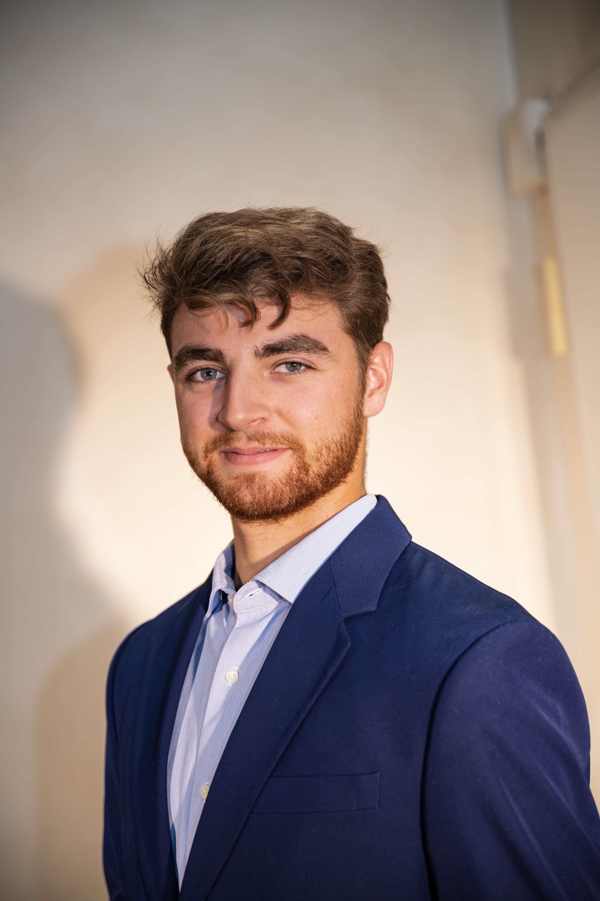

Étudiant en 2ème année du cycle ingénieur généraliste à l'ESIEE Paris, je combine une rigueur scientifique issue de mon parcours médical (PASS à l'Université de Montpellier) avec des compétences techniques de pointe en ingénierie logicielle.
Délégué de promotion et responsable communication d'une association étudiante, je m'attache à créer des outils performants pour le secteur médical. Mon objectif ? Innover dans la MedTech en créant des ponts solides entre les besoins cliniques réels et les possibilités technologiques (SaaS, IA appliquées à la santé).
Développement JS/TS, architecture SaaS. Enseignement en sciences fondamentales et management de projets complexes à l'ESIEE.
Une année charnière en PASS m'a apporté une compréhension profonde de la physiologie, de l'anatomie et des urgences du monde hospitalier actuel.